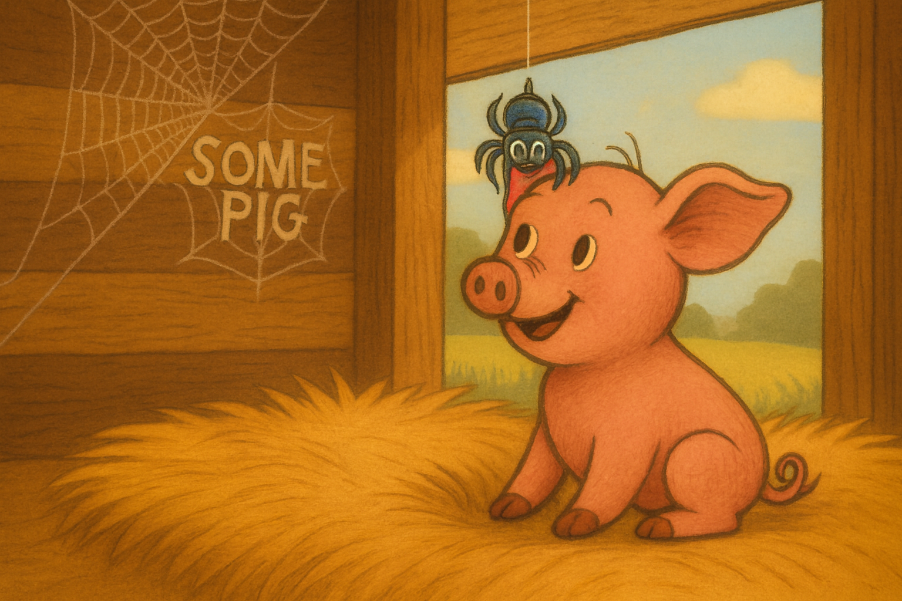

One day, Wilbur overheard the farmer talking. He learned that he might be killed for Christmas. His little heart trembled. “Oh no, I don’t want to die!” he cried.
Charlotte comforted him with calm wisdom. “Don’t worry, Wilbur. I will find a way to save you.”
She thought carefully and began to weave words into her web.
The first message appeared: “Some Pig.” When Mrs. Zuckerman saw it, she gasped, “It’s a miracle!” Soon, Charlotte added more words: “Terrific” and “Radiant.”
People from all around came to see Wilbur, amazed by the messages in the spider’s web. Wilbur stood proudly in his pen, but deep down he knew it was Charlotte’s cleverness that made him shine.